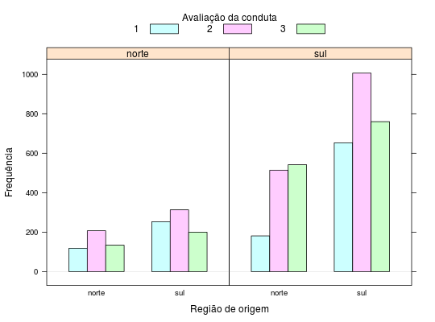

Em um estudo sobre a avaliação de políciais militares brancos por soldados americanos negros na Segunda Guerra Mundial, a resposta de cada soldado foi categorizada nos níveis 1 (quase sempre imparcial), 2 (parcial e imparcial em proporções iguais) e 3 (quase sempre parcial)
Um data.frame com 12 observações e 4 variáveis, em que
origunidcondufreqPAULINO; SINGER (2006), Exercício 9.29, pág. 343.
data(PaulinoEx9.29) str(PaulinoEx9.29)#> 'data.frame': 12 obs. of 4 variables: #> $ orig : Factor w/ 2 levels "norte","sul": 1 1 1 1 1 1 2 2 2 2 ... #> $ unid : Factor w/ 2 levels "norte","sul": 1 1 1 2 2 2 1 1 1 2 ... #> $ condu: int 1 2 3 1 2 3 1 2 3 1 ... #> $ freq : int 118 207 134 181 514 542 253 313 200 653 ...xt <- xtabs(freq ~ ., data = PaulinoEx9.29) ftable(xt)#> condu 1 2 3 #> orig unid #> norte norte 118 207 134 #> sul 181 514 542 #> sul norte 253 313 200 #> sul 653 1006 760library(lattice) barchart(xt, horizontal = FALSE, beside = FALSE, stack = FALSE, auto.key = list(space = "top", columns = 3, cex.title = 1, rectangles = TRUE, points = FALSE, title = "Avaliação da conduta"), xlab = "Região de origem", ylab = "Frequência")